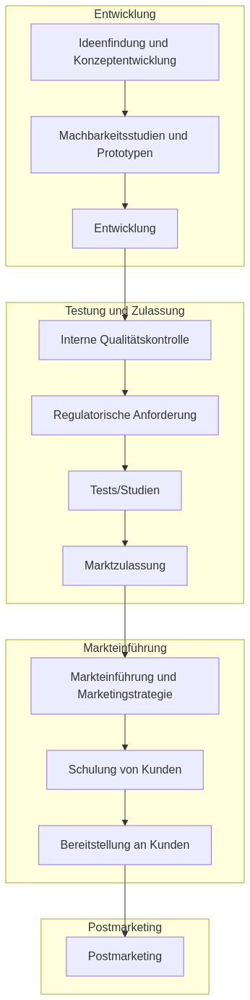

Digitale Innovation
Einleitung
In seinem JAMA Artikel „How AI Could Reshape Health Care—Rise in Direct-to-Consumer Models“, beschreibt Kenneth D. Mandl, wie künstliche Intelligenz (KI) die Gesundheitsversorgung grundlegend verändern könnte, insbesondere durch den Aufstieg direkter Konsumentenmodelle (DTC). Er hebt hervor, dass Google Search längst als Entscheidungshilfe für Patienten dient, während Amazon Prime Telemedizin, Apothekenleistungen und vor Ort hausärztliche Versorgung integriert. Traditionelle Gesundheitsorganisationen (HCOs) kämpfen jedoch mit der digitalen Innovation, da sie an starren Strukturen und komplexen Anforderungen hängen bleiben. Gleichzeitig kommt es zu einer Vermarktwirtschaftlichung der Gesundheitsversorgung durch DTC-Unternehmen, die mit Big Tech und agilen KI-Lösungen schnell skalieren und personalisierte Angebote schaffen, während HCOs Marktanteile an diese Innovatoren verlieren könnten. (Mandl 2025)
Die Studie „A scoping review of ethical aspects of public-private partnerships in digital health“ von Marieke A. R. Bak et al. (npj Digital Medicine, 2025) analysiert ethische Herausforderungen von öffentlich-privaten Partnerschaften (PPPs) im Bereich digitaler Gesundheit anhand von 46 Studien aus PubMed, EMBASE und Web of Science. Drei Hauptthemen wurden identifiziert: Datenschutz und Einwilligung, Sicherstellung öffentlicher Vorteile und Zugang sowie gute Governance und Vertrauenswürdigkeit. Die Ergebnisse zeigen, dass PPPs Datenschutzbedenken, unklare Definitionen von „öffentlichem Nutzen“ und Machtungleichgewichte zwischen Partnern aufwerfen, wie beispielsweise in den kontroversen Fällen care.data, NHS/DeepMind und deCODE. Die Autoren empfehlen frühzeitige, kontextbezogene Ethikrichtlinien, transparente Governance und öffentliche Beteiligung, um verantwortungsvolle Innovation zu fördern, und fordern weitere Forschung zu tripartiten Partnerschaften und der „Ökonomisierung“ digitaler Gesundheit. (Bak u. a. 2025)
Digitale Innovationen können über direkte und indirekte Zugangswege in den ersten Gesundheitsmarkt integriert werden (Gersch und Danelski 2022).
Direkte Zugangswege (B2P/B2C-Lösungen)
- Digitale Pflegeanwendungen (DiPA, §40a SGB XI):
- Versorgung von Pflegebedürftigen mit digitalen Anwendungen, die deren Selbstständigkeit fördern.
- Antragstellung erfolgt bei der Pflegekasse.
- Nicht zwingend als Medizinprodukt klassifiziert.
- Digitale Gesundheitsanwendungen (DiGA, §139e SGB V):
- Medizinprodukte der Risikoklasse I oder IIa.
- Aufnahme in das DiGA-Verzeichnis durch das Fast-Track-Verfahren des BfArM.
- Verordnung durch Ärzte oder Psychotherapeuten (“App auf Rezept”).
- Primärprävention (§20 SGB V):
- Angebote zur Verhinderung von Krankheitsrisiken (z. B. Bewegung, Ernährung).
- Individuelle Verträge der Krankenkassen, keine gesetzliche Regelversorgung.
- Neue Untersuchungs- und Behandlungsmethoden (NUB, §§135, 137c-h SGB V):
- Erprobung und mögliche Integration neuer Methoden in den Leistungskatalog.
- Voraussetzung: wissenschaftlicher Nachweis von Nutzen und Wirksamkeit.
- Hilfsmittel (§33, §139 SGB V, §40, §78 SGB XI):
- Versorgung mit medizinischen oder pflegerischen Hilfsmitteln.
- Digitale Lösungen wie Medikamentenspender, Trackingsysteme, etc.
- Satzungsleistungen (§11 SGB V):
- Krankenkassen können freiwillige Zusatzleistungen anbieten (z. B. nicht verschreibungspflichtige Medikamente).
- Besondere Versorgung (§140a SGB V):
- Verträge zwischen Krankenkassen und Leistungserbringern, z. B. für sektorenübergreifende Lösungen.
Indirekte Zugangswege (B2B-Modelle)
- Krankenhauszukunftsgesetz (KHZG):
- Finanzierung von Digitalisierungsprojekten in Krankenhäusern (z. B. elektronische Patientenakten, IT-Sicherheit).
- White-Label-Lösungen:
- Anpassung digitaler Produkte an die Markenidentität der Kunden, z. B. für Krankenversicherungen oder Pflegeeinrichtungen.
- Anything-as-a-Service (XaaS):
- Cloud-basierte IT-Dienstleistungen für Stakeholder im Gesundheitswesen (z. B. SaaS, PaaS).
- IT-Service-Provider:
- Langfristige Bereitstellung von IT-Diensten für Krankenkassen und andere Akteure (z. B. Digitalisierung von Prozessen).
- Modulare Funktionsangebote:
- Dienste wie Trust-Service-Provider (z. B. digitale Signaturen) oder Datenaggregatoren.
Entwicklungsprozess

Beispiele
| Forschungsprojekt | URL |
|---|---|
| Neue Versorgungsformen | innovationsfonds.g-ba.de |
| Blog3 | blog3.de |
| Initiative | URL |
|---|---|
| AdAM steht für „Anwendung für digital unterstütztes Arzneimitteltherapie-Management“ | teledermatologie.infokom.de |
| RP-DOC | rpdoc.de |
| PAVK-TEGECOACH | innovationsfonds.g-ba.de |
| Veovita | veovita.de |
Digimanagerin
Die Fortbildung „Digi-ManagerIn“ der KVWL qualifiziert nichtärztliches Praxispersonal in Westfalen-Lippe zu Digitalisierungsbeauftragten. Sie umfasst 205 Stunden und wird in Kooperation mit der Ärztekammer Westfalen-Lippe und der Universität Witten/Herdecke durchgeführt. Theoretische Module behandeln Datenschutz, Telematikinfrastruktur und digitale Kommunikation. Praktische Anwendungen finden in der digitalen Musterpraxis „dipraxis“ statt. Teilnehmende erstellen eine praxisindividuelle Digitalisierungsstrategie mit dem KVWL-Reifegradmodell. Praxen erhalten 5.000 Euro Aufwandsentschädigung für die Freistellung. Das Programm startete im April 2023 und wird ab 2025 zweimal jährlich angeboten. In Baden-Württemberg bietet die Landesärztekammer mit der MAK und dem Bosch Digital Innovation Hub ein Blended-Learning-Seminar „Digi-Managerin (Arztpraxis)“ an. Es richtet sich an medizinisches Fachpersonal, umfasst 40 Unterrichtseinheiten über fünf Tage in Stuttgart und kostet 298 Euro. Weitere Informationen gibt es unter www.aerztekammer-bw.de. Andere Bundesländer bieten derzeit keine vergleichbare Fortbildung mit diesem Titel an. Ähnliche Weiterbildungen zur Digitalisierung existieren jedoch deutschlandweit. kv-innovationsscout.de/projekt/digi-managerin aerztekammer-bw.de/digi-managerin kvwl.de/themen-a-z/digi-managerin kvbawue.de/kvbw/aktuelles/news-artikel/neues-mak-seminar-digi-managerin
Referenzpraxis
Die Kassenärztliche Vereinigung Westfalen-Lippe (KVWL) präsentiert mit der „dipraxis“ eine Ausstellung zur Digitalisierung im Gesundheitswesen. In dieser Beispielpraxis können Vertragsärzte und -psychotherapeuten digitale Tools wie Online-Terminbuchungen, digitales Patientenmanagement und Telematikinfrastruktur-Anwendungen direkt testen und Fortbildungspunkte sammeln. Die KVWL bietet neutrale, herstellerunabhängige Beratung, zeigt auf Touchscreens Datenanalysen und teilt Erfahrungsberichte von Kollegen. Ähnlich unterstützt die KV Berlin mit der „DEMO E-Health Showpraxis“ Praxisteams durch interaktive Einblicke in digitale Lösungen, die Praxisabläufe optimieren, die Zusammenarbeit fördern und die Patientenversorgung verbessern. Termine für beide Showrooms sind online buchbar. Die KV Brandenburg fördert digitale Referenzpraxen mit monatlich 1.000 Euro, um praxistaugliche Innovationen zu testen.
Plattformen
Medxsmart.de ist eine Vergleichsplattform, die speziell für digitale Tools in Arztpraxen entwickelt wurde. Sie bietet Ärztinnen und Ärzten die Möglichkeit, verschiedene Lösungen zu durchsuchen und zu vergleichen, um die Digitalisierung ihrer Praxis zu optimieren.
Die Open Healthcare Alliance (OHA) ist ein Netzwerk, das sich darauf konzentriert, die digitale Gesundheitsversorgung voranzutreiben. Es fördert die Zusammenarbeit und den Austausch zwischen verschiedenen Akteuren im Gesundheitssektor, um innovative, interoperable Lösungen zu entwickeln und zu implementieren.
Solutionfinder.health ist eine Plattform, die Health IT Lösungen für Gesundheitsdienstleister zusammenführt. Sie bietet eine zentrale Anlaufstelle, um digitale Tools und Services zu entdecken, die für spezifische Bedürfnisse im Gesundheitswesen geeignet sind, und somit die Auswahl und Implementierung dieser Lösungen erleichtert.
United Web Solutions ist ein Verband, der sich darauf spezialisiert hat, die Digitalisierung im Gesundheitswesen durch maßgeschneiderte IT-Lösungen voranzutreiben. Er bietet Krankenhäusern und MVZ die Möglichkeit, durch die Kombination verschiedener Expertenlösungen ihre Arbeitsprozesse zu optimieren und effizienter zu gestalten.
healthon.de ist eine Informations- und Qualitätsplattform für Gesundheits-Apps in Deutschland, die Verbraucher und Fachöffentlichkeit über Trends und Entwicklungen in der digitalen Gesundheit informiert. Sie bewertet Gesundheits-Apps, Medizin-Apps und Digitale Gesundheitsanwendungen (DiGA) anhand eines Ehrenkodex, bietet Testberichte, Marktanalysen und Statistiken wie das DiGA-Dashboard, um Transparenz zu schaffen.
Das KV-Appradar ist ein Informationsportal des Zentralinstituts für die kassenärztliche Versorgung (Zi), das seit 2021 Fachinformationen zu über 3.400 Gesundheits-Apps und Digitalen Gesundheitsanwendungen (DiGA) bietet, um Ärzt:innen, Psychotherapeut:innen und Patient:innen bei der Orientierung im App-Markt zu unterstützen. Sie kategorisiert Apps in etwa 60 Themenbereiche, liefert Bewertungen, Downloadzahlen und unterscheidet sich von App-Stores durch medizinische Relevanz und Diagnoseinformationen.
Mindapps beinhaltet die Mobile Health Index and Navigation Database (MIND), eine interaktive Plattform, die dabei hilft, Apps für mentale Gesundheit und Gehirnfunktionen zu finden, die individuellen Bedürfnissen und Vorlieben entsprechen. Nutzer können Apps nach Kriterien wie Datenschutz, Kosten (inklusive kostenloser Optionen), wissenschaftlicher Evidenz und Nutzerfreundlichkeit durchsuchen, um die passende Anwendung für sich zu identifizieren. Die Datenbank richtet sich an alle, die mentale Gesundheits-Apps suchen, und bietet eine Vielzahl von Kategorien wie Apps gegen Depressionen, Angstzustände oder Stress. Sie wird als gemeinnütziges Projekt ohne Werbung präsentiert und zielt darauf ab, personalisierte Lösungen für psychisches Wohlbefinden zu fördern.
DigaDocs bietet Informationen zu Digitalen Gesundheitsanwendungen (DiGA) in Deutschland, die seit Ende 2019 auf Rezept verschrieben werden können. Die Plattform richtet sich an Patienten sowie ärztliches und therapeutisches Personal und stellt Testberichte, Übersichten zu zugelassenen DiGAs und wissenschaftliche Einschätzungen bereit.
Offener Quelltext
Open-Source-Software ist in ambulanten Arztpraxen bisher wenig verbreitet, während sie in anderen Bereichen des Gesundheitswesens, insbesondere in Gesundheitsämtern, zunehmend an Bedeutung gewinnt. In Arztpraxen dominieren proprietäre Praxisverwaltungssysteme, da diese oft spezialisierte Funktionen für Abrechnung, Dokumentation und Telematikinfrastruktur bieten. Open-Source-Lösungen wie OpenEMR oder Thera-Pi existieren zwar, werden aber vergleichsweise selten genutzt, da viele Praxen auf zertifizierte, kommerzielle Software angewiesen sind und Wechselbarrieren hoch sind. Im Gegensatz dazu haben Gesundheitsämter in den letzten Jahren verstärkt auf Open Source gesetzt. Ein prominentes Beispiel ist SORMAS, das in vielen deutschen Gesundheitsämtern zur digitalen Kontaktnachverfolgung während der COVID-19-Pandemie eingesetzt wurde. Auch das Open-Source-Projekt Agora zeigt, dass öffentliche Stellen zunehmend auf offene, transparente Softwarelösungen setzen.
Der medatixx-HealthHub ist ein digitales Ökosystem, das Praxen und Gesundheitsdienstleister durch moderne FHIR-Standards nahtlos vernetzt. Es ermöglicht Softwareanbietern, ihre Lösungen sicher und standardisiert in die medatixx-Praxissoftware zu integrieren, während Praxen aus einem Marktplatz digitaler Anwendungen wählen können, um Prozesse effizienter zu gestalten. Die Plattform fördert Zusammenarbeit, verbessert Kommunikation und unterstützt die Digitalisierung im Gesundheitswesen, wobei Sicherheit durch einen Akkreditierungs- und Testprozess gewährleistet wird.
Geschäftsmodelle
Softwarehersteller im Bereich der ambulanten Medizin nutzen unterschiedliche Geschäftsmodelle. Sie unterscheiden sich in Kostenstrukturen und Innovationskraft. Es gibt Anbieter mit Lizenzmodell, bei dem Ärzte Anschaffungskosten zahlen, gefolgt von jährlichen Gebühren. Andere bieten Abonnements (SaaS), bei denen monatliche Gebühren für Cloud-basierte Lösungen anfallen – flexibel, aber mit fortlaufenden Kosten und Notwendigkeit eines von Internetzugang; die Innovationskraft ist hoch, da regelmäßige Updates den Wettbewerb antreiben. Wieder andere verkaufen Software als einmaligen Kauf mit optionalen Supportverträgen. Das Genossenschaftsmodell der Duria eG hebt sich davon ab: ÄrztInnen zahlen einmalig einen Genossenschaftsanteil und einen jährlichen Beitrag.
Zertifizierung Digitaler Anwendungen
Gesundheits-Apps bilden die Mehrheit der verfügbaren Anwendungen und umfassen ungeschützte Begriffe wie Lifestyle-Apps (z. B. Fitness-Tracker) oder serviceorientierte Apps, die keine medizinischen Zwecke verfolgen, sondern Informationen und Organisation unterstützen. Digitale Medizinprodukte hingegen sind CE-gekennzeichnete Anwendungen, die nach EU-Medizinprodukteverordnung (MDR) registriert sind und gezielt Krankheiten erkennen, behandeln oder Patienten zu einem gesundheitsförderlichen Leben begleiten. DiGA (Digitale Gesundheitsanwendungen) sind eine spezielle Unterkategorie digitaler Medizinprodukte, die zusätzlich vom BfArM auf Sicherheit, Qualität und Wirksamkeit geprüft werden, einen positiven Gesundheitsnutzen nachweisen müssen und als „Apps auf Rezept“ erstattungsfähig sind, wenn sie ärztlich verschrieben oder direkt über die Krankenkasse bei Diagnose beantragt werden.
Der DiGA-Analyzer von fbeta ist ein Analysetool, das Daten des DiGA-Verzeichnisses des BfArM strukturiert, visuell aufbereitet und im Verlauf einordnet. Er bietet interaktive Charts und Einblicke zu Markttrends, Evidenznarrativen und der Verzeichnis-Historie, um Marktlücken zu identifizieren und strategische Entscheidungen im Bereich Digitaler Gesundheitsanwendungen (DiGA) zu unterstützen. Die quartalsweise aktualisierten Daten basieren auf dem Bundesanzeiger und ermöglichen nutzerdefinierte Analysen für Markteinblicke.
Die Studie von Shaheen E. Lakhan, veröffentlicht im Mai 2025 in Cureus, stellt den Composite Digital Therapeutic Index (cDTI) vor, ein Rahmenwerk zur Bewertung von verschreibungspflichtigen digitalen Therapeutika (PDTs). Der cDTI kombiniert vier Domänen – Wirksamkeit, Engagement, Evidenzqualität und Sicherheit – zu einem einzigen Score, um von der FDA zugelassene PDTs zu vergleichen. Der cDTI bietet ein transparentes, reproduzierbares Werkzeug für Stakeholder, mit Plänen zur Erweiterung um Real-World-Daten und weitere Domänen wie Gerechtigkeit und Kosteneffizienz. (Lakhan 2025)
Gründungszentren
Startup-Inkubatoren und -Acceleratoren für digitale Gesundheitsunternehmen unterstützen digitale Lösungen im Gesundheitswesen, indem sie Gründern Ressourcen, Netzwerke und Finanzierung bereitstellen. Flying Health in Berlin verbindet Startups mit etablierten Akteuren der Gesundheitsbranche, bietet strategische Beratung und unterstützt bei der Entwicklung zukunftsfähiger Geschäftsmodelle. Startupbootcamp Digital Health mit Sitz in Berlin beschleunigt junge Unternehmen durch ein intensives Programm, das von Partnern wie Sanofi oder Munich Re unterstützt wird, und hat Erfolge wie BOCAhealth (Hydrationsmessung) vorzuweisen. G4A Health, initiiert von Bayer, bietet Startups bis zu 100.000 Euro, 100 Tage Co-Working-Space und Mentoring, wobei seit 2013 über 150 digitale Gesundheitsfirmen gefördert wurden, darunter Okko Health (Augen-Biomarker). Speedinvest, ein europäischer Venture-Capital-Fonds, investiert in frühe Phasen digitaler Gesundheitslösungen und bietet neben Kapital auch strategische Unterstützung. Bosch Health Campus in Stuttgart fördert interdisziplinäre Innovationen im Gesundheitsbereich mit Fokus auf Forschung und Kooperationen. Hubs Sidepreneur listet verschiedene deutsche Inkubatoren auf, die teils auch Health-Startups unterstützen, wobei der Fokus jedoch breiter gefasst ist. Diese Programme unterscheiden sich in ihrer Ausrichtung – von praxisnaher Frühentwicklung bis hin zu langfristiger Forschungskooperation – und tragen gemeinsam dazu bei, die Digitalisierung im Gesundheitswesen voranzutreiben.
Veranstaltungsformate
Die Ideenkampagne ADRENALIN@UKSH startete 2021 am Universitätsklinikum Schleswig-Holstein mit dem Ziel, Mitarbeitende aktiv in die Zukunftsgestaltung einzubinden. Für ambulante Praxen ist dabei besonders relevant, dass der Erfolg digitaler Innovationen von einer offenen internen Kommunikation und dem Engagement des Teams abhängt. Über eine ganzheitliche Strategie, die technische Lösungen mit sozialen und organisatorischen Faktoren verbindet, lassen sich digitale Technologien in den Praxisalltag integrieren. Hackathons bringen interdisziplinäre Teams zusammen, um komplexe Probleme des Gesundheitswesens kreativ zu lösen. Sie fördern den Wissenstransfer zwischen Forschung, Wirtschaft und Praxis, treiben technologische und organisatorische Innovationen voran und stärken durch Kooperationen.
Technologische Disruption
Die Studie “Voice as a Biomarker in Health-Tech: Mapping the Evolving Landscape of Voice Biomarkers in the Start-Up World” von Emily G. Evangelista und Kollegen untersucht die wachsende Rolle von Stimmbiomarkern in der Gesundheitstechnologie. Dies könnte andere, bisherige Diagnoseverfahren teilweise obsolet machen. Der Markt für Stimmbiomarker wurde 2021 mit 1,9 Milliarden US-Dollar bewertet und soll bis 2028 auf über 5,1 Milliarden US-Dollar ansteigen, mit einer jährlichen Wachstumsrate von 15,15 %. Ziel der Studie war es, die aktuelle Landschaft von Start-ups zu kartieren, die Stimme als Gesundheitsbiomarker nutzen. Dafür wurden umfassende Recherchen über Internetquellen, soziale Medien und Literaturdatenbanken durchgeführt. Insgesamt wurden 27 Start-ups identifiziert, die KI einsetzen, um Stimmbiomarker zu entwickeln; 24 davon sammelten Investitionen in Höhe von über 178 Millionen US-Dollar und veröffentlichten gemeinsam 194 Publikationen, von denen 66 % peer-reviewed sind. (Evangelista u. a. 2024)
Die Arbeit “Disruptive Innovation – Considerations for Health and Health Care in Europe”, herausgegeben von der Expertengruppe der Europäischen Kommission für effektive Investitionen im Gesundheitswesen (EXPH), untersucht das Potenzial disruptiver Innovationen im europäischen Gesundheitssektor. Disruptive Innovationen werden als Veränderungen definiert, die neue Netzwerke und Organisationsstrukturen schaffen, ältere Systeme verdrängen und Gesundheitsversorgung effizienter sowie zugänglicher machen. Die Expertengruppe identifiziert fünf zentrale Bereiche für disruptive Innovationen: translationale Forschung, Zugang zu neuen Technologien, Präzisionsmedizin, Ausbildung von Gesundheitsfachkräften und Gesundheitsförderung. Es empfiehlt politische Maßnahmen, um förderliche Bedingungen für Innovationen zu schaffen und bestehende Barrieren zu überwinden, während gleichzeitig Gerechtigkeit, Qualität und Nachhaltigkeit im Gesundheitswesen gewahrt bleiben. (Innovation, o. J.)
Beratung
Beratungsunternehmen unterstützen bei der digitalen Transformation. Der Beratungsprozess beginnt mit einer Analyse der Bedürfnisse der Arztpraxis, gefolgt von einer individuellen Beratung und dem Vorschlag maßgeschneiderter digitaler Lösungen. Nach der Planung und Umsetzung, einschließlich Installation und Schulung, bieten die Anbieter fortlaufenden Support, um eine effiziente Nutzung sicherzustellen, während Datenschutz stets gewährleistet wird.
| Name | URL |
|---|---|
| Docport | docport.de |
| Eterno Health | eterno.health |
| Arztkonsultation | arztkonsultation.de |
| Lux Digitale Praxis | lux-digitalepraxis.de |
| Digital Medizin | digital-medizin.com |
| Medizinio | medizinio.de |
| GoMedicus | gomedicus.com |
| Praxis Digital | praxisdigital.info |
„Praxis-as-a-Service“ (PaaS) ist ein innovatives Konzept, bei dem Arztpraxen als vollständig digitalisierte und outsourced gemanagte Einheiten betrieben werden, wobei Dienstleister die gesamte technische Infrastruktur, wie Telematikinfrastruktur und Softwarelösungen, bereitstellen und warten, um den Praxisbetrieb zu optimieren. „Innovation-as-a-Service“ (IaaS) hingegen fokussiert sich darauf, Gesundheitseinrichtungen Zugang zu maßgeschneiderten, extern entwickelten Innovationslösungen zu bieten, etwa durch KI-gestützte Diagnostik oder digitale Therapieplattformen, ohne dass diese selbst entwickelt werden müssen. Beide Ansätze zielen darauf ab, die Effizienz zu steigern und den Fokus auf die Patientenversorgung zu legen, indem sie komplexe technologische Herausforderungen an spezialisierte Anbieter delegieren.
Praxisgründung Simulator
Praxisraum ist ein innovatives Planspiel, das angehende Ärztinnen und Ärzte spielerisch auf den Aufbau und die Organisation einer Vertragsarztpraxis vorbereitet. Unter www.praxisraum.de können Nutzer ein Serious Game erleben, das durch Gamification-Elemente wie Avatar-Auswahl, praxisnahe Entscheidungen und Herausforderungen motiviert. Ziel ist es, Wissenslücken zu schließen und Berührungsängste abzubauen, indem realitätsnahe Daten in eine interaktive, motivierende Spielumgebung eingebettet werden.
Institutionalisierung
In Deutschland haben sich mehrere Institute gebildet, die sich der digitalen Medizin widmen:
- Institut für Digitale Medizin (IDM) der Universität Bonn
- IDM am Universitätsklinikum Augsburg
- IDM am Philipps-Universität Marburg
- Fraunhofer MEVIS in Bremen
- University Center for Digital Healthcare (UCDHC) in Frankfurt am Main
- Institut für Digitale Medizin an der Goethe-Universität Frankfurt
- Innovationszentrum Digitale Medizin am Uniklinikum Aachen
- Institut für Digitalisierung in der Medizin am Uniklinikum Freiburg
Hinweis: Der Text erhebt keinen Anspruch auf Vollständigkeit oder Korrektheit und stellt keine Rechtsberatung dar.